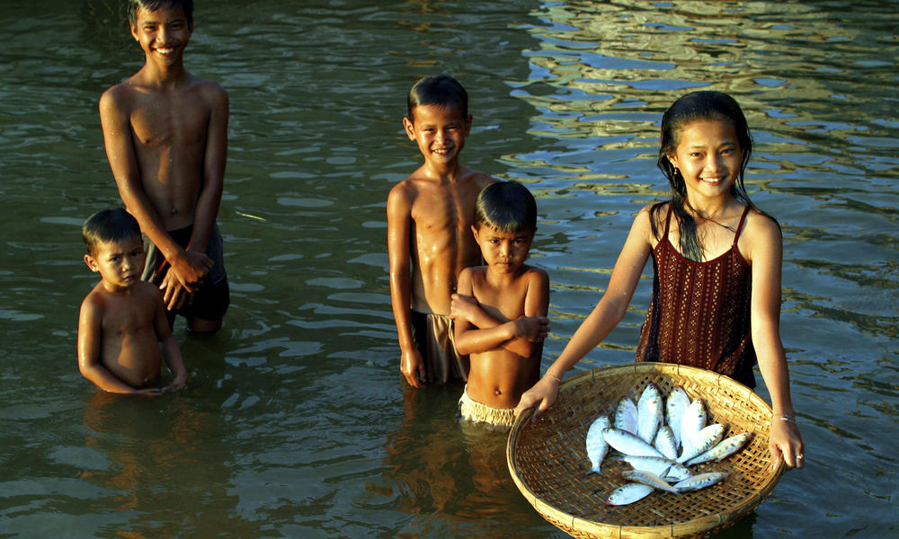
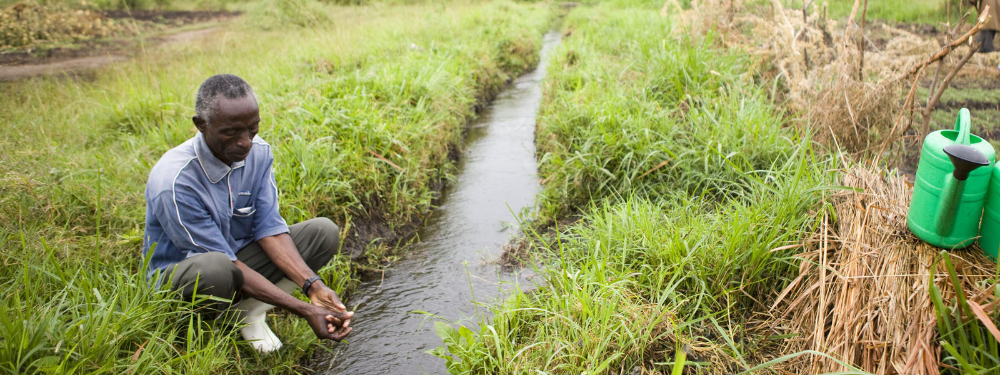
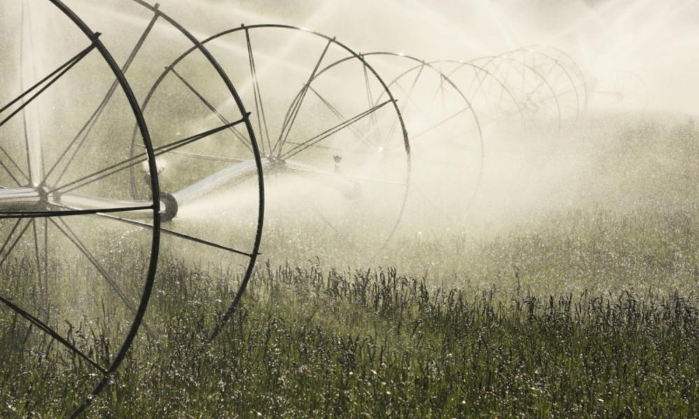

Protecting Freshwater Ecosystems

All life needs water. It is the world's most precious resource, fueling everything from the food you eat, to the cotton you wear, to the energy you depend upon every day. Freshwater habitats-such as lakes, rivers, streams, wetlands and aquifers-house an incredible proportion of the world’s biodiversity::more than 10% of all known animals and about 50% of all known fish species. Yet despite the massive role water plays for people and nature, it is a surprisingly finite resource. Less than 1% of the world's water is fresh and accessible.
It's also threatened. Climate change, population growth and changing consumption patterns are just a few of the myriad forces putting freshwater systems increasingly at risk. Freshwater species are declining at an alarming rate of 76%-much faster than terrestrial or marine species-and freshwater habitats are in worse condition than those of forests, grassland or coastal systems.
Protecting fresh water cannot happen alone. WWF partners with governments, businesses, international financial institutions and communities to ensure healthy freshwater systems exist to conserve wildlife and provide a sustainable future for all. Together, we can create a water-secure future
For four decades, WWF has been part of the movement to fight this global crisis. Our vision is a world powered by renewable energy, where communities and ecosystems are resilient in the face of climate changes. We engage millions of Americans, leading businesses and government leaders to realize this future. Preparing local communities, helping ecosystems adapt to rapid change, and reducing the emissions that drive climate change are critical to a safer world for ourselves, our children and the rest of life on Earth.
FOOD

Globally, agriculture uses the highest percentage of freshwater, accounting for about 70% of total water withdrawals. While most of the water goes to irrigation, it also helps provide the energy and ecosystem services required for farming. As the planet's population increases and consumption patterns change alongside economic prosperity, global demand for food will increase. Freshwater fish also provide an important source of protein and livelihoods for millions of people around the world.
HEALTHY COMMUNITIES

Clean, fresh water is an essential ingredient for a healthy human life, but 1.1 billion people lack access to water and 2.4 billion don't have adequate sanitation. Diseases caused by unsafe water and inadequate sanitation kill more people every year than all forms of violence, including war. The situation is predicted to get worse: by 2025, two-thirds of the world's population may be facing water shortages. Sustainable access to fresh water and sanitation leads to healthier people and economic growth, which facilitate improved environmental management. In other words, healthy communities help preserve a healthy planet, and a healthy planet is the foundation for healthy communities.